КРОКОДИЛУ — 85
Вспомним, товарищ...
Намедни стукнуло 85 лет журналу Крокодил, и тут я не могу обойтись без глубокого реверанса. Да, нынешний, мостовщиковский «Крокодил» не такой, как раньше — что, впрочем, вполне закономерно — но, как бы кто ни скрипел зубами, история продолжается, и я, например, неприлично горд оказаться ее частью, не говоря уже об удовольствии выступать на одной сцене c Батынковым, Буркиным и Копейкиным.
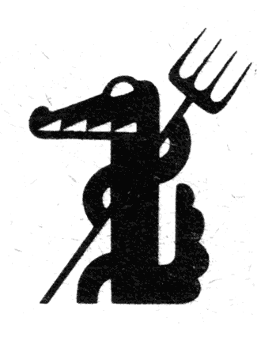
Первые поколения Крокодильских рисовальщиков уже давно стали частью истории большого искусства.
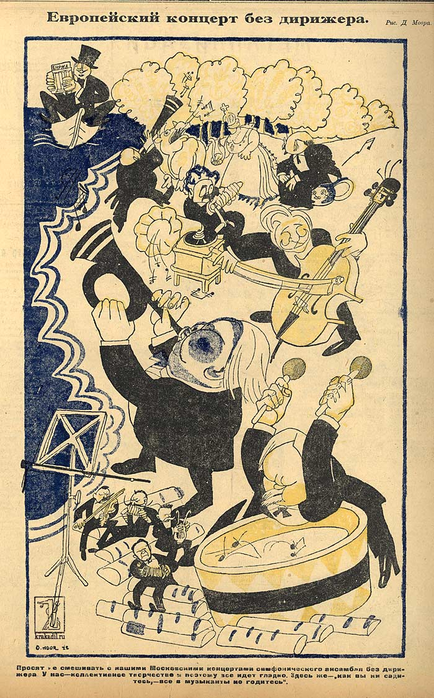
Леонид Сойфертис
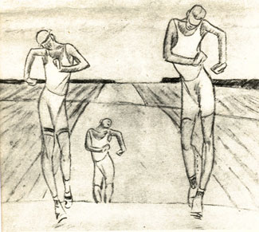
Я же хочу вспомнить времена, до которых у искусствоведов еще не дошли руки — срок давности еще не вышел, а собственно темы карикатур (очереди, кооперативы, перестройка) — устарели ровно настолько, чтобы не хотелось вспоминать.
Валерий Дмитрюк
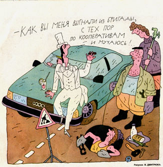
Я не претендую на что-либо исчерпывающее, я только вспомню тех, кто мне особенно дорог, кому я, пожалуй, обязан тем, что вообще стал рисовать. Для меня они сочетают в идеальном соотношении легкость и мастерство. Особенно поглядите на мелкие детали. Удовольствие, которое эти люди получают от рисования и которое сообщают нам, зрителям, покупая нас с потрохами, есть идеологическая противоположность лени. Видно, что дай им волю, они прорисуют каждый камушек (они, впрочем, еще и знают, когда остановиться), и у каждого камушка будет свой характер. Следя за каждым буквально штрихом, слышишь «И-эх».
Герман Огородников
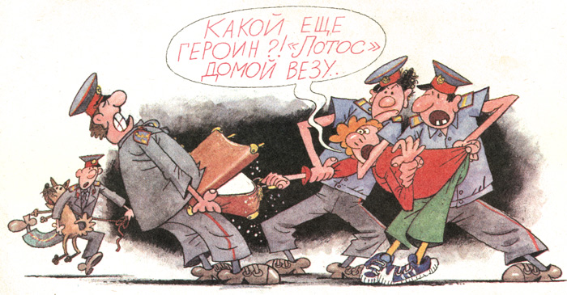
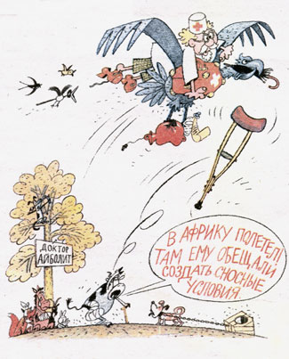
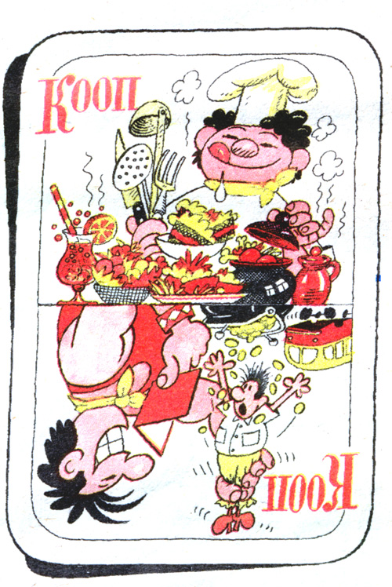
Владимир Мочалов
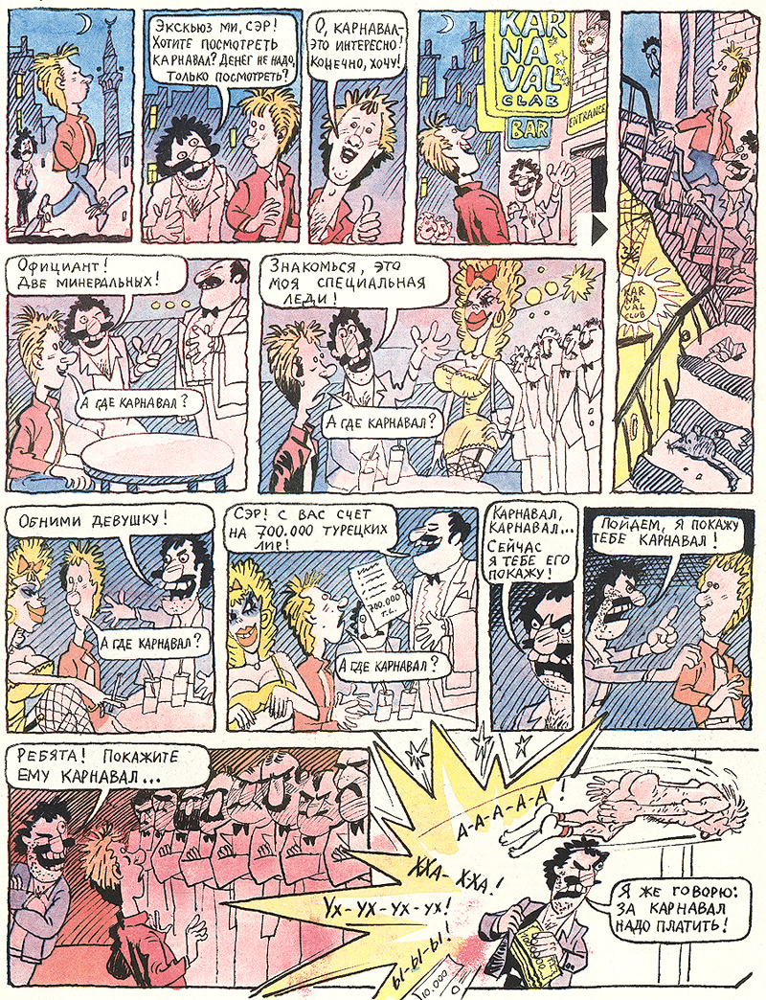
Как-то его многообильные портреты последних лет растеряли дикую эту легкость и кривоватость штриха. и даже чрезвычайно драматичные политические карикатуры 70х так мне не греют душу, как вот это вот:
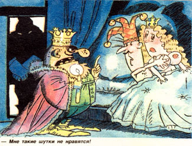
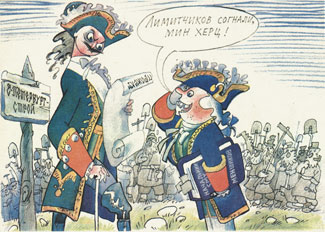
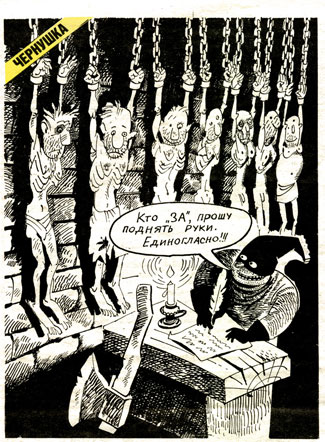
Леонид Насыров — по мне, так самый лихой рисовальщик тех времен.
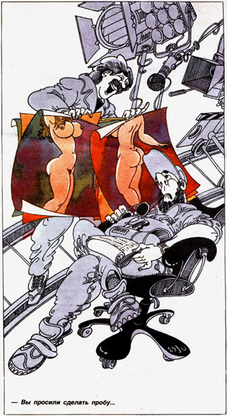
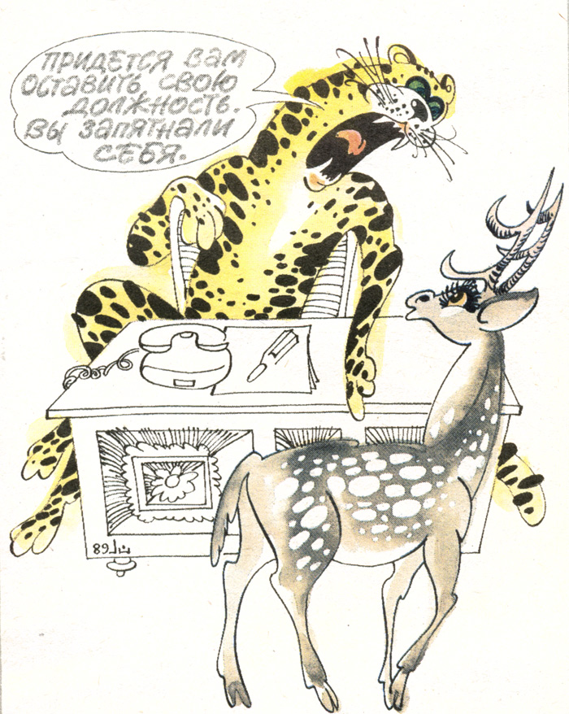
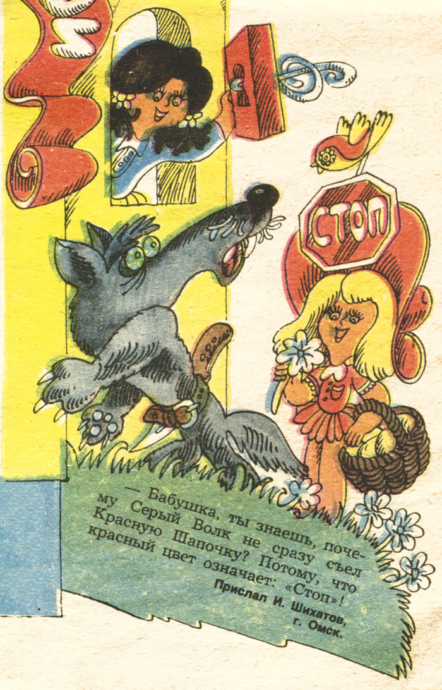
О божественно съехавшие пленки!
К сожалению, в моей драной подшивке его работ нашлось всего ничего (а в сети так и вовсе пусто), зато он же ответственен за большую часть надписей и виньеток, которыми Крокодил себя обильно украшал
В общем, давайте по случаю такой даты дружно сходим сюда и и сюда, а еще лучше замотаем нос от пыли марлей и полезем на антресоль за старыми подшивками.